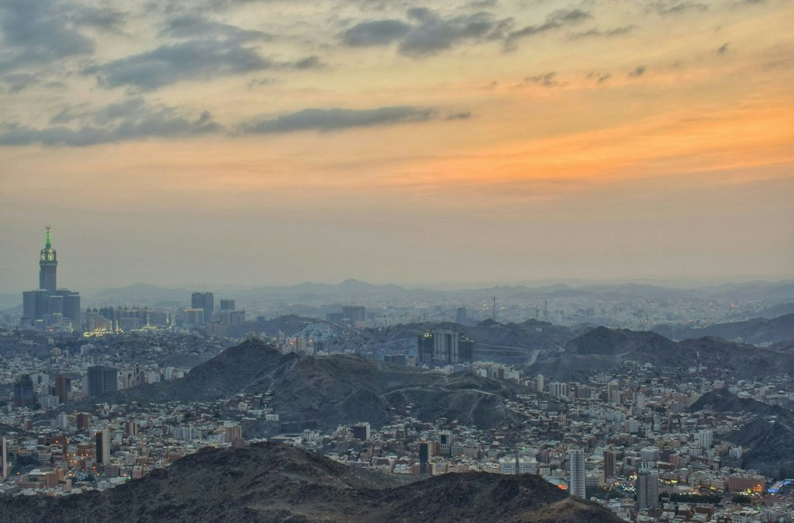
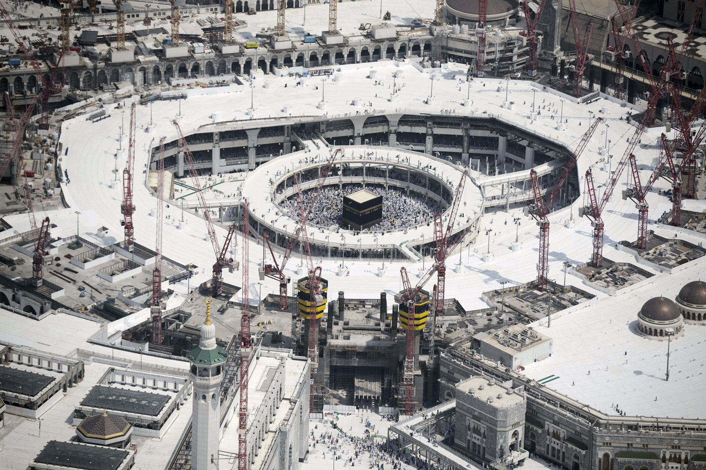

Uppoffringar och resande har alltid varit en del av hajj
Hajj har alltid varit en krävande resa, och sätten att ta sig till Mekka har förändrats dramatiskt. Fram till 1800-talet reste de flesta i karavaner från Damaskus, Kairo och Bagdad, med kamel, åsna eller till fots, ofta i månader och med stora risker som hetta, torka, sjukdomar och rövare. Segelfartyg över Röda havet användes också. På 1800-talet kom ångfartyget, och Suezkanalen (1869) gjorde sjövägen mycket kortare. Under 1900-talet tog bil och buss över inom regionen, medan flyget blev det stora genombrottet, idag kommer de flesta utländska pilgrimer med flyg till Jedda eller Medina. Resan som en gång tog månader tar nu några timmar, och det är denna utveckling som gjort att antalet pilgrimer kunnat växa från tiotusentals till närmare två miljoner per år.
Khadem al-Haramain al-Sharifain
Saudiarabien har lagt ner enorma resurser på att göra hajj och umra så lätta och säkra som möjligt. Landet har byggt ut de heliga moskéerna i Mekka och Medina, anlagt kylda tältstäder i Mina, och satsat på boenden i olika prisklasser, vatten, toaletter, sjukvård och viloplatser. Man har investerat i vägar, tunnlar, bussar, tåg och digitala tjänster, och varje år mobiliseras tiotusentals anställda, volontärer och säkerhetsstyrkor. Målet är att pilgrimerna ska kunna koncentrera sig på sin andakt istället för att oroa sig för boende, mat eller vila. Denna ständiga ansträngning uttrycks i titeln "Khadem al-Haramain al-Sharifain",("De två heliga moskéernas tjänare"), som kungarna använt sedan 1986 för att understryka att statens främsta uppgift och ära är att tjäna de heliga platserna och deras besökare.
För mer info besök gärna: